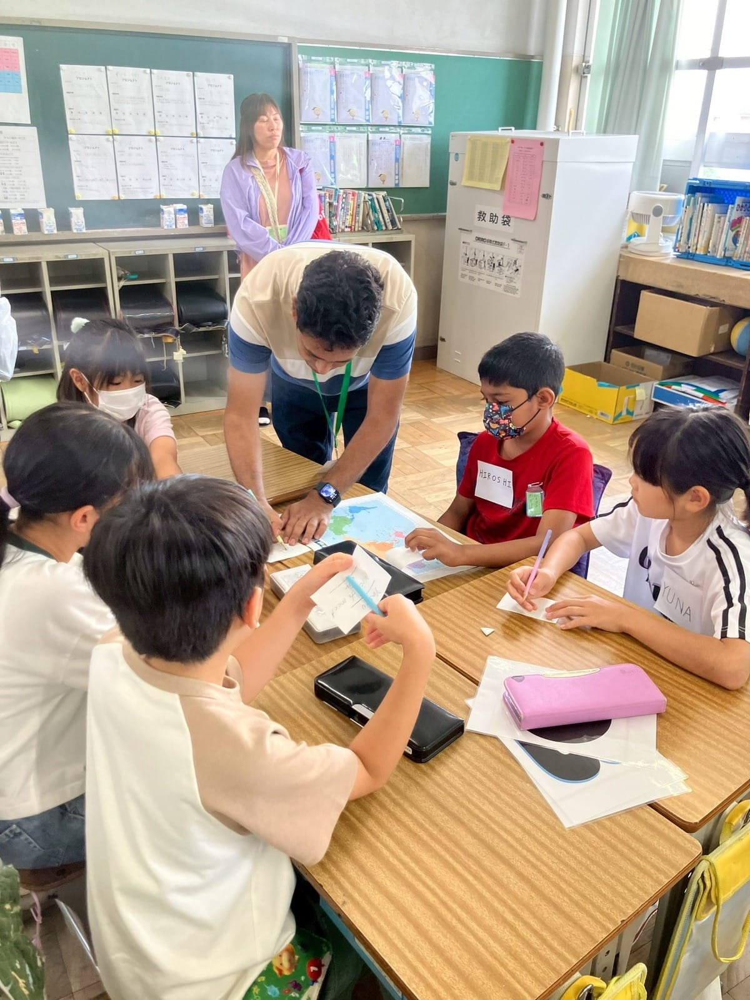
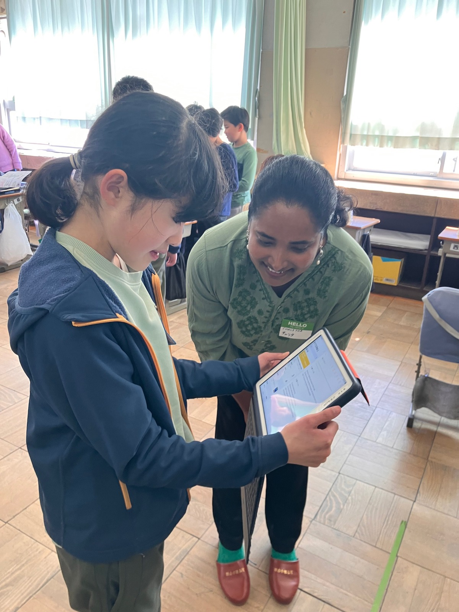
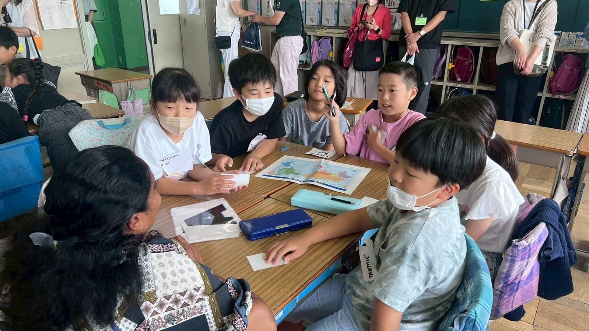

Sami
Sami

体験活動（体験型授業）が子どもにもたらす効果については既に広く話題にされ、学習目標に合わせた取り組みが推奨されています。「生活・文化体験（国際文化交流体験）」などを取り入れることで、児童・生徒の自己肯定感や協調性・積極性といった非認知能力の向上につながるといわれています。
しかし「外国人講師を招いても、単なる楽しい活動・イベントで終わってしまう」「外国人講師とのコミュニケーション自体、そもそもハードルが高い」といった難しさを感じている現場の方々は少なくないはず。
本コラムでは、国際文化交流・国際理解教育の観点から整理した、授業設計に活かせる視点を３つ共有させていただきます。
1. 外国人講師との交流によって育まれる力
① 異文化への好奇心と「違い」を面白いと感じる感覚
外国人講師から直接「私の国ではこうするんだよ」という話を聞いた子どもは、文化の違いを「異質なもの」ではなく「興味関心をかき立てられるもの」として受け取ります。この感覚は、将来的に多様な人と協働できる態度や、グローバルな場面で物怖じしない姿勢の土台になります。
② 言葉を超えたノンバーバル（非言語）コミュニケーション
外国人講師とのコミュニケーションでは、ノンバーバル（非言語）コミュニケーションが重要になります。言葉が完全に通じなくても「伝えたい」という気持ちが先に立ちます。ジェスチャー・絵・片言の英語を使ってでも伝えようとする経験は、コミュニケーションの本質が「言語の正確さ」よりも「意図の伝達」にあることを体感させてくれます。
この体験は外国語学習への動機づけにもなり、「外国語を使えた」という成功体験は自己効力感の向上につながります。

③ 多様性への共感と「自分たちの文化」の再発見
外国人講師が自分の文化を紹介するとき、子どもたちは自分の「当たり前」が実は世界の「当たり前」ではないことに気づきます。この気づきは、自国の文化を客観的に見る力（文化的メタ認知）を育て、同時に自国の文化への誇りや愛着を育てることにもつながります。
SDGs教育の観点からも、「違う文化を持つ人と共に生きる」という多文化共生の視点を子どもが実感を持って学べる貴重な機会です。
2. 体験型授業と座学との違い
座学が「知識の受容」であるのに対し、体験型授業とは活動・対話・経験を通じて学ぶ授業形式といえます。外国人講師との交流を中心とした体験型授業では、児童・生徒は「見る・聞く・話す・反応する」という行動を通じて、エピソード記憶の定着と自分事化が期待できます。
| 体験型授業（外国人講師あり） | 座学中心の国際理解教育 | |
|---|---|---|
| 情報の受け取り方 | 児童・生徒がリアルな「人」から直接体験や対話を得る | 教員から伝達されたり、書かれた知識・映像から得る |
| 感情の動き | 驚き・共感・好奇心が生まれやすい | 比較的静的 |
| 記憶への残りやすさ | エピソード記憶として定着しやすい | 繰り返しがないと忘れやすい |
| クラスの雰囲気 | 自然な笑い・やりとりが生まれる | 整然とした受信状態 |
このように体験型授業には座学とは異なる観点で子どもに学びをもたらします。外国人講師との交流を「イベント」で終わらせないためには、外国人講師を【子どもたちの「問い」に応えるパートナー】として位置づけることが大切です。

3. 総合的な学習の時間との親和性と授業設計のポイント
学習指導要領が総合的な学習の時間に求める「資質・能力の3本柱」を実現するにあたり、外国人講師を活用した体験型授業は非常に相性が良いといえます。
たとえば「自分たちの地域に住む外国人の暮らしと食文化を学ぶ」という単元を位置付けていると仮定してみましょう。外国人講師を【子どもたちの「問い」に応えるパートナー】とすることで、「主体的・対話的で深い学び」を次のような流れで実現することができます。
【授業設計のポイント】

4. まとめ
外国人講師との体験型授業は、異文化への好奇心・非言語を含むコミュニケーション能力・多様性への共感という、学習指導要領が掲げる「生きる力」を育むための有効な手段です。
楽しいだけで終わらせず、授業を「問い」から始まる探究のプロセスとして設計することで、体験は「国際文化交流と学び」へ進化します。本コラムが、外国人講師との出会いを最大限に活用した授業づくりに少しでもお役に立てたら幸いです！

この記事のまとめ
- 外国人講師との交流は、異文化への好奇心・非言語コミュニケーション力・多様性への共感を育てる
- 体験型授業は座学と異なり、エピソード記憶として定着しやすく「自分事化」が進む
- 外国人講師を「問いに応えるパートナー」として位置づけることで、総合的な学習の時間と高い親和性を持つ
- 事前の問い設定・振り返り・ファシリテーターとしての教員の関わりが効果を最大化する